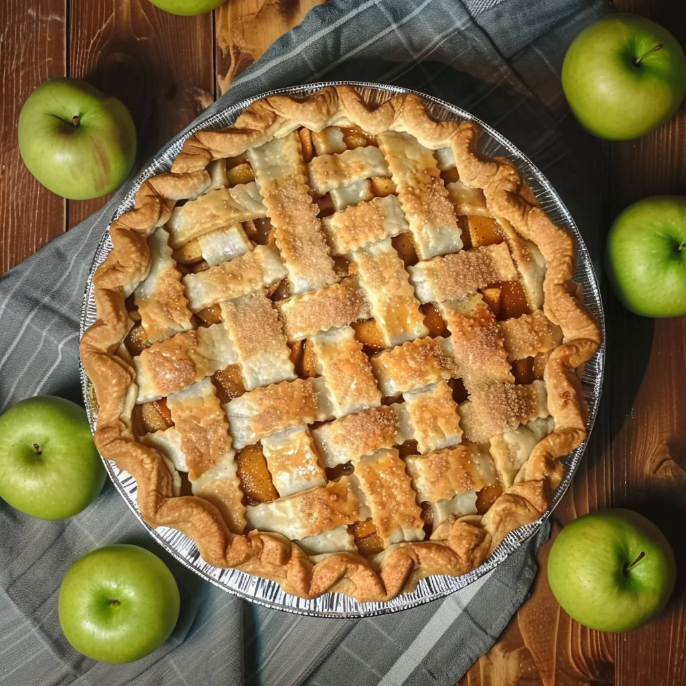

Classic Apple Pie
Ingredients
Apples (Granny Smith), Flour (Wheat Flour, Malted Barley Flour), Butter (Milk), Water, Cane Sugar, Spices (Ground Cinnamon, Ground Nutmeg), Salt.
$38
OrderPieTime bakes fresh homemade pies — apple, peach, and cherry — with local delivery across the West San Fernando Valley and nearby neighborhoods.
Our pies are built on a classic, refined recipe: carefully made crust, no starch, and only the purest ingredients. We add a subtle hint of spices to our traditional apple pie to honor its timeless character, while allowing the natural flavor of real fruit to take center stage. Unbleached wheat flour, clean water, real butter, and a touch of sugar come together with craftsmanship and care in every bake.
We bake in small batches to keep everything fresh, so advance orders are recommended.
No payment required until order is confirmed.
We currently deliver to Calabasas, Woodland Hills, Tarzana, Encino, Sherman Oaks, Studio City, Lake Balboa, Reseda, West Hills, Canoga Park, and nearby areas.
Yes. We offer local delivery in Calabasas, Woodland Hills, Tarzana, Encino, Sherman Oaks, Studio City, Lake Balboa, Reseda, West Hills, and Canoga Park. Delivery is included in the price within our service area.
You can place your order by clicking the “Order Your Pie” button and filling out our form. After that, we will confirm your delivery time and send payment instructions.
We recommend placing your order at least 24 hours in advance, as we bake in small batches to keep everything fresh. Same-day delivery may be available depending on availability.
No. Our pies are made with simple, natural ingredients — unbleached wheat flour, real butter, fresh fruit, clean water, and a small amount of sugar. We do not use starch or preservatives.
We currently offer homemade Apple Pie, Peach Pie, and Cherry Pie — all made from scratch using classic recipes and fresh ingredients.
Yes. You can order multiple pies. We also offer a 10% discount when you order two or more pies.
After we confirm your order, we will send you payment instructions via Zelle, Venmo, or PayPal.